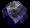
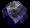

Arokh is a living legend who served in the Order of the Flame over 600 years before Rynn’s time. He is a fire dragon of the Elder Breed and originally came from the warmer, south eastern continent where he was born along with his two brothers and one sister. When he was very young, he decided to seek new lands and adventure and travelled with his father to Surdana, the district in which Rynn’s village is situated. His father soon joined the Order leaving Arokh to more or less fend for himself which formed an instant bitter relationship between father and son. Angry and disillusioned and unable to travel home again, Arokh settled down and some years later, met Heron, an early 40’s aged warrior who served as a protector for his village and its people. After being friends for a few months, the two decided to bond and become members of the Order of the Flame, which had been around for many years ensuring peace throughout the world. Together they served in the Order for a couple of hundred years – Heron benefiting from Arokh’s long life span and within time they became highly respected and skilled warriors.
Tragically after about 400 years of the Order’s reign, a huge war broke out between the Order and the Dark Union, one of the Order’s greatest foes, lead by the traitor war mage Navaros and his dragon Kaeros. Eventually, after 3 years of fighting, the Order’s forces were seriously depleted and they arranged a last stand against Navaros. Heron and Arokh were entrusted with the Runeblade – a powerful sword that could open rifts which they used to try and kill Navaros. Unfortunately, victory came at a price; the forces unleashed upon Navaros’s defeat resulted in Heron’s death along with the remnants of the Order with him. Navaros himself was sucked into the rift when the runeblade pierced his heart. Arokh and Rimril were the only survivors of that last battle and afterwards Arokh, saddened by the death of his bonded and his entire family, returned to his cave to go into eternal sleep. His soul crystal was buried within Heron’s tomb beneath the village temple.
The great red dragon is a knowledgeable and intelligent creature who speaks very politely and distinctly upper class. He is a magnificent beast with an almost perfect, well formed muscular body and he knows how handsome he looks – and he’s proud of it. He tends to fancy himself and like most male dragons, believes he is god’s gift to females.
With his high opinion of himself and his reputation, he likes to associate himself with high ranking military and the nobles of the world rather than ‘ordinary people’. He has little time for common villagers and farmers regarding them worthless and not of much use to society. In fact he enjoys his authority and gets a kind of sadistic pleasure from making people kneel before him and lick his feet. He worked hard during his life to accomplish his status symbol and is proud to be the saviour of the world and his achievement even though it resulted in the loss of his first bonded. Rynn however was the one to break some of these past traits and solitude within the dragon and despite his sarcasm and nasty attitude, Arokh has a good sense of humour and often jokes and laughs with his bonded as their friendship develops over the course of the games.